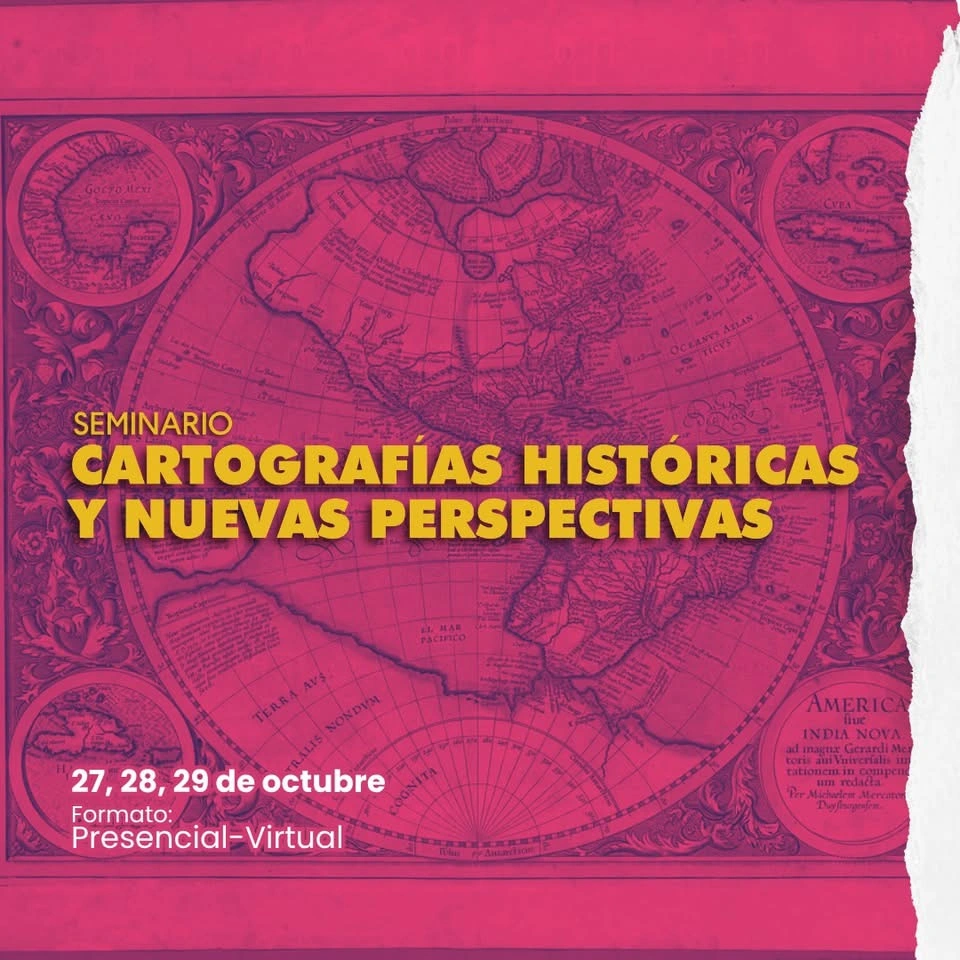

<link rel="stylesheet" href="css/Estilos_Eventos_y_Noticias.css" />

<section id="eventos-noticias">
  <div class="contenido-investigacion">
    <p>
      La comunicación de <strong>eventos y noticias</strong> es crucial para el Laboratorio de Estudios Urbanos, ya que consolida nuestra misión de ser un espacio de encuentro para la investigación, la docencia y la extensión. Al difundir conferencias, seminarios y actividades, <strong>fortalecemos el intercambio de conocimiento</strong> y fomentamos la colaboración entre la comunidad académica. Esta ventana de comunicación nos permite visibilizar el trabajo de nuestros investigadores y estudiantes, proyectando nuestro impacto y relevancia en el debate público sobre los desafíos urbanos.
    </p>

    <h2 id="calendario-eventos">Calendario de Eventos</h2>

    <table class="tabla-cursos">
      <thead>
        <tr>
          <th>Evento</th>
          <th>Fecha</th>
          <th>Sede</th>
        </tr>
      </thead>
      <tbody>
        <tr>
          <td>Seminario Cartografía Histórica y Nuevas Perspectivas</td>
          <td>27, 28 y 29 de octubre de 2025</td>
          <td>K001 de la UAM-A y vitrinas del Edif. L</td>
        </tr>
      </tbody>
    </table>

    <section id="detalle-evento" class="evento-detalle">
      <div class="evento-imagen">
        
      </div>

      <div class="evento-texto">
        <h3>Seminario Cartografía Histórica y Nuevas Perspectivas<br>27, 28 y 29 de octubre de 2025</h3>

        <p>Organizado por el Anuario de Espacios Urbanos, el Laboratorio de la Forma Urbana y el Área de Estudios Urbanos de la UAM Azcapotzalco.</p>

        <p>Este seminario propone reflexionar sobre los mapas como construcciones sociales, los desafíos teóricos que implican y las herramientas tecnológicas que permiten nuevas formas de lectura e interpretación del territorio.</p>

        <p>📌 Se recibirán propuestas de participación en las mesas de trabajo organizadas por los siguientes ejes temáticos:</p>
        <ul>
          <li>Cartografía histórica</li>
          <li>Sistemas de Información geográfica y cartografía</li>
          <li>Cartografía crítica / contra-cartografías</li>
          <li>Cartografía Feminista</li>
        </ul>

        <p><strong>Fecha límite de recepción:</strong> 1 de julio de 2025</p>
        <p><strong>Formulario:</strong> <a href="http://bit.ly/4lbzoZV" target="_blank">Ver Formulario</a></p>
        <p><strong>Cartel:</strong> <a href="https://drive.google.com/file/d/19T3t9etobSYmhcYSt12ex08AmQVsUdJg/view" target="_blank">Ver cartel</a></p>
      </div>
    </section>
  </div>
</section>
